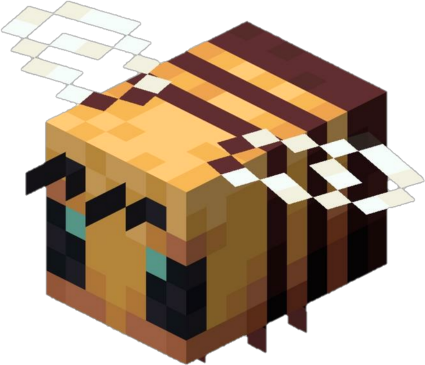

Animales

Abeja
Puede aparecer en biomas de prado, bosques de roble y de abeto
Vaca
Generalmente se encuentra en las planicies
Burro
Generalmente se encuentra en las planicies
Zorro
Se encuentra en bosques de taiga
Hoglin
Se encuentra en el infierno
Ocelote
Se puede encontrar en aldeas o en selvas
Panda
Se encuentra en selvas de bambu
Vaca seta roja
Se encuentra en islas de setas rojas

Strider
Se encuentra en el infierno